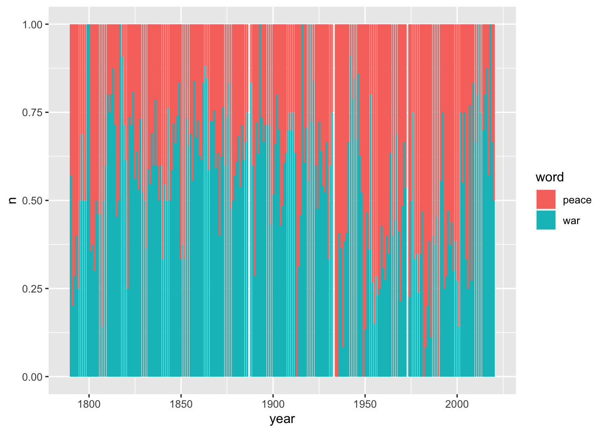

Chapter 2 Analyzing Texts
Learning Objectives
- perform frequency counts and generate plots
- use the
widyrpackage to calculate co-ocurrance- use
igraphandggraphto plot a co-ocurrance graph- import and export a Document-Term Matrix into
tidytext- use the
sentimentsdataset fromtidytextto perform a sentiment analysis
Now that we’ve read in our text and metadata, tokenized and cleaned it a little, let’s move on to some analysis.
First, we’ll make sure we have loaded the libraries we’ll need.
library(tidyverse)
library(tidytext)Let’s remind ourselves of what our data looks like.
tidy_sotu_words#> # A tibble: 778,161 × 7
#> president year years_active party sotu_type doc_id word
#> <chr> <int> <chr> <chr> <chr> <chr> <chr>
#> 1 Abraham Lincoln 1861 1861-1865 Republican written abraham-lincol… fell…
#> 2 Abraham Lincoln 1861 1861-1865 Republican written abraham-lincol… citi…
#> 3 Abraham Lincoln 1861 1861-1865 Republican written abraham-lincol… sena…
#> 4 Abraham Lincoln 1861 1861-1865 Republican written abraham-lincol… house
#> 5 Abraham Lincoln 1861 1861-1865 Republican written abraham-lincol… repr…
#> 6 Abraham Lincoln 1861 1861-1865 Republican written abraham-lincol… midst
#> 7 Abraham Lincoln 1861 1861-1865 Republican written abraham-lincol… unpr…
#> 8 Abraham Lincoln 1861 1861-1865 Republican written abraham-lincol… poli…
#> 9 Abraham Lincoln 1861 1861-1865 Republican written abraham-lincol… trou…
#> 10 Abraham Lincoln 1861 1861-1865 Republican written abraham-lincol… grat…
#> # … with 778,151 more rows2.1 Frequencies
Since our unit of analysis at this point is a word, let’s count to determine which words occur most frequently in the corpus as a whole.
tidy_sotu_words %>%
count(word, sort = TRUE)#> # A tibble: 29,558 × 2
#> word n
#> <chr> <int>
#> 1 government 7573
#> 2 congress 5759
#> 3 united 5102
#> 4 people 4219
#> 5 country 3564
#> 6 public 3413
#> 7 time 3138
#> 8 war 2961
#> 9 american 2853
#> 10 world 2581
#> # … with 29,548 more rowsWe can pipe this into ggplot to make a graph of the words that occur more that 2000 times. We count the words and use geom_col to represent the n values.
tidy_sotu_words %>%
count(word) %>%
filter(n > 2000) %>%
mutate(word = reorder(word, n)) %>% # reorder values by frequency
ggplot(aes(word, n)) +
geom_col(fill = "gray") +
coord_flip() # flip x and y coordinates so we can read the words betterNow let’s look at a different question: In any given year, how often is the word ‘peace’ used and how often is the word ‘war’ used?
# steps:
# Select only the words 'war' and 'peace'.
# count ocurrences of each per year
tidy_sotu_words %>%
filter(word %in% c("war", "peace")) %>%
count(year, word)#> # A tibble: 435 × 3
#> year word n
#> <int> <chr> <int>
#> 1 1790 peace 3
#> 2 1790 war 4
#> 3 1791 peace 4
#> 4 1791 war 1
#> 5 1792 peace 5
#> 6 1792 war 2
#> 7 1793 peace 6
#> 8 1793 war 4
#> 9 1794 peace 3
#> 10 1794 war 1
#> # … with 425 more rowsNow we can plot this as a bar chart that shows for each year the proportion of each of these two words out of the total of how often both words are used.
# plot n by year, and use position 'fill' to show the proportion
tidy_sotu_words %>%
filter(word %in% c("war", "peace")) %>%
count(year, word) %>%
ggplot(aes(year, n, fill = word)) +
geom_col(position = "fill")
As another example let us calculate the average number of words per speech for each president: How long was the average speech of each president and who are the most ‘wordy’ presidents?
First we summarize the words per president per speech:
tidy_sotu_words %>%
count(president, doc_id)#> # A tibble: 236 × 3
#> president doc_id n
#> <chr> <chr> <int>
#> 1 Abraham Lincoln abraham-lincoln-1861.txt 2578
#> 2 Abraham Lincoln abraham-lincoln-1862.txt 3088
#> 3 Abraham Lincoln abraham-lincoln-1863.txt 2398
#> 4 Abraham Lincoln abraham-lincoln-1864.txt 2398
#> 5 Andrew Jackson andrew-jackson-1829.txt 3849
#> 6 Andrew Jackson andrew-jackson-1830.txt 5428
#> 7 Andrew Jackson andrew-jackson-1831.txt 2612
#> 8 Andrew Jackson andrew-jackson-1832.txt 2881
#> 9 Andrew Jackson andrew-jackson-1833.txt 2869
#> 10 Andrew Jackson andrew-jackson-1834.txt 4952
#> # … with 226 more rowsThen we use the output table and group it by president. That allows us to calculate the average number of words per speech.
tidy_sotu_words %>%
count(president, doc_id) %>%
group_by(president) %>%
summarize(avg_words = mean(n)) %>%
arrange(desc(avg_words))#> # A tibble: 41 × 2
#> president avg_words
#> <chr> <dbl>
#> 1 William Howard Taft 9126.
#> 2 William McKinley 7797
#> 3 Jimmy Carter 7673.
#> 4 Theodore Roosevelt 7356
#> 5 James K. Polk 6920.
#> 6 Grover Cleveland 5736.
#> 7 James Buchanan 5409
#> 8 Benjamin Harrison 5308.
#> 9 Rutherford B. Hayes 4411
#> 10 Martin Van Buren 4286.
#> # … with 31 more rows2.2 Term frequency
Often a raw count of a word is less important than understanding how often that word appears relative to the total number of words in a text. This ratio is called the term frequency. We can use dplyr to calculate it like this:
tidy_sotu_words %>%
count(doc_id, word, sort = T) %>% # count occurrence of word and sort descending
group_by(doc_id) %>%
mutate(n_tot = sum(n), # count total number of words per doc
term_freq = n/n_tot)#> # A tibble: 352,846 × 5
#> # Groups: doc_id [236]
#> doc_id word n n_tot term_freq
#> <chr> <chr> <int> <int> <dbl>
#> 1 harry-s-truman-1946.txt dollars 207 12614 0.0164
#> 2 jimmy-carter-1980b.txt congress 204 16128 0.0126
#> 3 harry-s-truman-1946.txt war 201 12614 0.0159
#> 4 william-howard-taft-1910.txt government 164 11178 0.0147
#> 5 james-k-polk-1846.txt mexico 158 7023 0.0225
#> 6 richard-m-nixon-1974b.txt federal 141 9996 0.0141
#> 7 harry-s-truman-1946.txt million 138 12614 0.0109
#> 8 harry-s-truman-1946.txt fiscal 129 12614 0.0102
#> 9 jimmy-carter-1981.txt administration 129 16595 0.00777
#> 10 william-howard-taft-1912.txt government 129 10215 0.0126
#> # … with 352,836 more rowsLet’s plot the distribution of the term frequency for the speeches:
tidy_sotu_words %>%
count(doc_id, word) %>% # count n for each word
group_by(doc_id) %>%
mutate(n_tot = sum(n), # count total number of words per doc
term_freq = n/n_tot) %>%
ggplot(aes(term_freq)) +
geom_histogram() This distribution makes sense. Many words are used relatively rarely in a text. Only a few have a high term frequency.
Assuming that terms with high relative frequency are an indicator of significance we can find the term with the highest term frequency for each president:
tidy_sotu_words %>%
count(president, word) %>% # count n for each word
group_by(president) %>%
mutate(n_tot = sum(n), # count total number of words per doc
term_freq = n/n_tot) %>%
arrange(desc(term_freq)) %>% # sort by term frequency
top_n(1) %>% # take the top for each president
print(n = Inf) # print all rows#> # A tibble: 43 × 5
#> # Groups: president [41]
#> president word n n_tot term_freq
#> <chr> <chr> <int> <int> <dbl>
#> 1 John Adams united 49 2768 0.0177
#> 2 John Tyler government 209 12596 0.0166
#> 3 Martin Van Buren government 256 17145 0.0149
#> 4 William J. Clinton people 336 22713 0.0148
#> 5 Franklin D. Roosevelt war 283 19311 0.0147
#> 6 William McKinley government 452 31188 0.0145
#> 7 Andrew Jackson government 436 31031 0.0141
#> 8 Andrew Johnson government 207 14968 0.0138
#> 9 George Washington united 86 6226 0.0138
#> 10 Calvin Coolidge government 274 20518 0.0134
#> 11 James K. Polk mexico 360 27679 0.0130
#> 12 James Buchanan government 279 21636 0.0129
#> 13 Zachary Taylor congress 38 2948 0.0129
#> 14 Ulysses S. Grant united 359 27933 0.0129
#> 15 William Howard Taft government 461 36506 0.0126
#> 16 Grover Cleveland government 574 45889 0.0125
#> 17 Franklin Pierce united 200 16240 0.0123
#> 18 George Bush world 82 6706 0.0122
#> 19 James Monroe united 184 15157 0.0121
#> 20 George W. Bush america 209 17265 0.0121
#> 21 Millard Fillmore government 135 11986 0.0113
#> 22 John Quincy Adams congress 131 11788 0.0111
#> 23 Harry S Truman war 308 27819 0.0111
#> 24 Gerald R. Ford federal 65 5879 0.0111
#> 25 Herbert Hoover government 121 10947 0.0111
#> 26 Rutherford B. Hayes congress 194 17644 0.0110
#> 27 Chester A. Arthur government 185 16961 0.0109
#> 28 Lyndon B. Johnson congress 115 11207 0.0103
#> 29 James Madison war 85 8327 0.0102
#> 30 Barack Obama america 204 20529 0.00994
#> 31 Benjamin Harrison government 209 21230 0.00984
#> 32 Richard M. Nixon federal 232 23701 0.00979
#> 33 Jimmy Carter congress 518 53710 0.00964
#> 34 John F. Kennedy world 68 7302 0.00931
#> 35 Theodore Roosevelt government 528 58848 0.00897
#> 36 Ronald Reagan government 133 15005 0.00886
#> 37 Ronald Reagan people 133 15005 0.00886
#> 38 Woodrow Wilson government 105 11982 0.00876
#> 39 Warren G. Harding public 39 4583 0.00851
#> 40 Dwight D. Eisenhower world 204 24410 0.00836
#> 41 Thomas Jefferson country 58 7418 0.00782
#> 42 Abraham Lincoln congress 81 10462 0.00774
#> 43 Abraham Lincoln united 81 10462 0.00774CHALLENGE: Pick one president. For each of his speeches, which is the term with highest term frequency? Create a table as output. (Hint:
top_nmight be useful)
2.3 Tf-idf
So far we’ve been looking at term frequency per document. What if we want to know about words that seem more important based on the contents of the entire corpus?
For this, we can use term-frequency according to inverse document frequency, also callled tf-idf. Tf-idf measures how important a word is within a corpus by scaling term frequency per document according to the inverse of the term’s document frequency (number of documents within the corpus in which the term appears divided by the number of documents).
The tf-idf value will be:
- lower for words that appear frequently in many documents of the corpus, and lowest when the word occurs in virtually all documents.
- higher for words that appear frequently in just a few documents of the corpus, this lending high discriminatory power to those few documents.
The intuition here is that if a term appears frequently in a document, we think that it is important but if that word appears in too many other documents, it is not that unique and thus perhaps not that important.
The tidytext package includes a function bind_tf_idf. It takes a table that contains one-row-per-term-per-document, the name of the column that contains the words (terms), the name of the column which contains the doc-id, and the name of the column that contains the document-term counts.
So below we aggregate our tibble with the word tokens to create the one-row-per-term-per-document table and then pipe it into the bind_tf_idf function.
tidy_sotu_words %>%
count(doc_id, word, sort = TRUE) %>% # aggregate to count n for each word
bind_tf_idf(word, doc_id, n) #> # A tibble: 352,846 × 6
#> doc_id word n tf idf tf_idf
#> <chr> <chr> <int> <dbl> <dbl> <dbl>
#> 1 harry-s-truman-1946.txt dollars 207 0.0164 0.612 0.0100
#> 2 jimmy-carter-1980b.txt congress 204 0.0126 0.00425 0.0000537
#> 3 harry-s-truman-1946.txt war 201 0.0159 0.0345 0.000550
#> 4 william-howard-taft-1910.txt government 164 0.0147 0.00425 0.0000623
#> 5 james-k-polk-1846.txt mexico 158 0.0225 0.810 0.0182
#> 6 richard-m-nixon-1974b.txt federal 141 0.0141 0.293 0.00414
#> 7 harry-s-truman-1946.txt million 138 0.0109 0.728 0.00796
#> 8 harry-s-truman-1946.txt fiscal 129 0.0102 0.494 0.00505
#> 9 jimmy-carter-1981.txt administration 129 0.00777 0.282 0.00219
#> 10 william-howard-taft-1912.txt government 129 0.0126 0.00425 0.0000536
#> # … with 352,836 more rowsOur function added three columns to the aggregated table which contain term frequency (tf), inverse document frequency (idf) and Tf-idf (tf_idf).
Let’s look at some of the words in the corpus that have the highest tf-idf scores, which means words that are particularly distinctive for their documents.
tidy_sotu_words %>%
count(doc_id, word, sort = TRUE) %>%
bind_tf_idf(word, doc_id, n) %>%
arrange(desc(tf_idf))#> # A tibble: 352,846 × 6
#> doc_id word n tf idf tf_idf
#> <chr> <chr> <int> <dbl> <dbl> <dbl>
#> 1 lyndon-b-johnson-1966.txt vietnam 32 0.0152 2.42 0.0367
#> 2 jimmy-carter-1980a.txt soviet 31 0.0218 1.47 0.0321
#> 3 george-w-bush-2003.txt hussein 19 0.00811 3.85 0.0313
#> 4 george-w-bush-2003.txt saddam 19 0.00811 3.67 0.0298
#> 5 franklin-d-roosevelt-1943.txt 1942 13 0.00758 3.85 0.0292
#> 6 dwight-d-eisenhower-1961.txt 1953 23 0.00747 3.85 0.0288
#> 7 john-adams-1800.txt gentlemen 8 0.0153 1.80 0.0275
#> 8 benjamin-harrison-1892.txt 1892 40 0.00741 3.52 0.0261
#> 9 franklin-d-roosevelt-1942.txt hitler 7 0.00527 4.77 0.0251
#> 10 herbert-hoover-1930.txt 1928 14 0.00711 3.52 0.0250
#> # … with 352,836 more rowsTo understand the occurrence of the years as being particularly distinctive we might need to look more closely at the speeches themselves, and determine whether the years are significant or whether they need to be removed from the text either permanently in the clean up or temporarily using filter().
CHALLENGE: Pick the same president you chose above. For each of his speeches, which is the term with highest tf-idf? Create a table as output. (Hint: Remember to group by doc_id before you use top_n)
2.4 N-Grams
We mentioned n-grams in the intro, but let’s revisit them here and take a look at the most common bigrams in the speeches. Remember we can use the unnest_token() function on our texts and explicitly tell it to generate bigrams:
sotu_whole %>%
unnest_tokens(bigram, text, token = "ngrams", n = 2) # create bigram#> # A tibble: 1,964,976 × 7
#> president year years_active party sotu_type doc_id bigram
#> <chr> <int> <chr> <chr> <chr> <chr> <chr>
#> 1 Abraham Lincoln 1861 1861-1865 Republican written abraham-linco… fello…
#> 2 Abraham Lincoln 1861 1861-1865 Republican written abraham-linco… citiz…
#> 3 Abraham Lincoln 1861 1861-1865 Republican written abraham-linco… of the
#> 4 Abraham Lincoln 1861 1861-1865 Republican written abraham-linco… the s…
#> 5 Abraham Lincoln 1861 1861-1865 Republican written abraham-linco… senat…
#> 6 Abraham Lincoln 1861 1861-1865 Republican written abraham-linco… and h…
#> 7 Abraham Lincoln 1861 1861-1865 Republican written abraham-linco… house…
#> 8 Abraham Lincoln 1861 1861-1865 Republican written abraham-linco… of re…
#> 9 Abraham Lincoln 1861 1861-1865 Republican written abraham-linco… repre…
#> 10 Abraham Lincoln 1861 1861-1865 Republican written abraham-linco… in the
#> # … with 1,964,966 more rowsLet’s see the most common bigrams:
sotu_whole %>%
unnest_tokens(bigram, text, token = "ngrams", n = 2) %>%
count(bigram, sort = TRUE) # count occurrences and sort descending#> # A tibble: 469,092 × 2
#> bigram n
#> <chr> <int>
#> 1 of the 33610
#> 2 in the 12499
#> 3 to the 11643
#> 4 for the 6892
#> 5 and the 6224
#> 6 by the 5606
#> 7 of our 5172
#> 8 the united 4767
#> 9 united states 4760
#> 10 it is 4756
#> # … with 469,082 more rowsOk, so we again need to remove the stopwords. First let us separate the two words into two columns “word1” and “word2” with separate from the tidyr package:
sotu_whole %>%
unnest_tokens(bigram, text, token = "ngrams", n = 2) %>%
separate(bigram, c("word1", "word2"), sep = " ")#> # A tibble: 1,964,976 × 8
#> president year years_active party sotu_type doc_id word1 word2
#> <chr> <int> <chr> <chr> <chr> <chr> <chr> <chr>
#> 1 Abraham Lincoln 1861 1861-1865 Republican written abraham-… fell… citi…
#> 2 Abraham Lincoln 1861 1861-1865 Republican written abraham-… citi… of
#> 3 Abraham Lincoln 1861 1861-1865 Republican written abraham-… of the
#> 4 Abraham Lincoln 1861 1861-1865 Republican written abraham-… the sena…
#> 5 Abraham Lincoln 1861 1861-1865 Republican written abraham-… sena… and
#> 6 Abraham Lincoln 1861 1861-1865 Republican written abraham-… and house
#> 7 Abraham Lincoln 1861 1861-1865 Republican written abraham-… house of
#> 8 Abraham Lincoln 1861 1861-1865 Republican written abraham-… of repr…
#> 9 Abraham Lincoln 1861 1861-1865 Republican written abraham-… repr… in
#> 10 Abraham Lincoln 1861 1861-1865 Republican written abraham-… in the
#> # … with 1,964,966 more rowsNow we use dplyr’s filter() function to select only the words in each column that are not in the stopwords.
sotu_whole %>%
unnest_tokens(bigram, text, token = "ngrams", n = 2) %>%
separate(bigram, c("word1", "word2"), sep = " ") %>% # separate into cols
filter(!word1 %in% stop_words$word, # remove stopwords
!word2 %in% stop_words$word)#> # A tibble: 215,992 × 8
#> president year years_active party sotu_type doc_id word1 word2
#> <chr> <int> <chr> <chr> <chr> <chr> <chr> <chr>
#> 1 Abraham Lincoln 1861 1861-1865 Republican written abraham-… fell… citi…
#> 2 Abraham Lincoln 1861 1861-1865 Republican written abraham-… unpr… poli…
#> 3 Abraham Lincoln 1861 1861-1865 Republican written abraham-… poli… trou…
#> 4 Abraham Lincoln 1861 1861-1865 Republican written abraham-… abun… harv…
#> 5 Abraham Lincoln 1861 1861-1865 Republican written abraham-… pecu… exig…
#> 6 Abraham Lincoln 1861 1861-1865 Republican written abraham-… fore… nati…
#> 7 Abraham Lincoln 1861 1861-1865 Republican written abraham-… prof… soli…
#> 8 Abraham Lincoln 1861 1861-1865 Republican written abraham-… soli… chie…
#> 9 Abraham Lincoln 1861 1861-1865 Republican written abraham-… dome… affa…
#> 10 Abraham Lincoln 1861 1861-1865 Republican written abraham-… disl… port…
#> # … with 215,982 more rowsLastly, we re-unite the two word columns into back into our bigrams and save it into a new table sotu_bigrams.
sotu_bigrams <- sotu_whole %>%
unnest_tokens(bigram, text, token = "ngrams", n = 2) %>%
separate(bigram, c("word1", "word2"), sep = " ") %>% # separate into cols
filter(!word1 %in% stop_words$word, # remove stopwords
!word2 %in% stop_words$word) %>%
unite(bigram, word1, word2, sep = " ") # combine columns
sotu_bigrams %>%
count(bigram, sort = TRUE)#> # A tibble: 129,622 × 2
#> bigram n
#> <chr> <int>
#> 1 federal government 479
#> 2 american people 428
#> 3 june 30 325
#> 4 fellow citizens 296
#> 5 public debt 283
#> 6 public lands 256
#> 7 health care 240
#> 8 social security 232
#> 9 post office 202
#> 10 annual message 200
#> # … with 129,612 more rowsA bigram can also be treated as a term in a document in the same way that we treated individual words. That means we can look at tf-idf values in the same way. For example, we can find out the most distinct bigrams that the presidents uttered in all their respective speeches taken together.
We count per president and bigram and then bind the tf-idf value with the bind_tf_idf function. In order to get the top bigram for each president we then group by president, and sort and retrieve the highest value for each.
sotu_bigrams %>%
count(president, bigram) %>%
bind_tf_idf(bigram, president, n) %>%
group_by(president) %>%
arrange(desc(tf_idf)) %>%
top_n(1)#> # A tibble: 44 × 6
#> # Groups: president [41]
#> president bigram n tf idf tf_idf
#> <chr> <chr> <int> <dbl> <dbl> <dbl>
#> 1 George W. Bush al qaida 35 0.00628 3.02 0.0190
#> 2 John Adams john adams 3 0.00510 3.71 0.0189
#> 3 William J. Clinton 21st century 59 0.00830 1.77 0.0147
#> 4 Thomas Jefferson gun boats 7 0.00462 3.02 0.0140
#> 5 Thomas Jefferson port towns 7 0.00462 3.02 0.0140
#> 6 Thomas Jefferson sea port 7 0.00462 3.02 0.0140
#> 7 Zachary Taylor german empire 5 0.00789 1.63 0.0129
#> 8 Lyndon B. Johnson south vietnam 13 0.00424 3.02 0.0128
#> 9 James Madison james madison 8 0.00412 3.02 0.0124
#> 10 Harry S Truman million dollars 119 0.0129 0.941 0.0121
#> # … with 34 more rowsCHALLENGE: Again, pick the same president you chose above. For each of his speeches, which is the bigram with highest tf-idf? Create a table as output.
2.5 Co-occurrence
Co-occurrences give us a sense of words that appear in the same text, but not necessarily next to each other.
For this section we will make use of the widyr package. The function which helps us do this is the pairwise_count() function. It lets us count common pairs of words co-appearing within the same speech.
Behind the scenes, this function first turns our table into a wide matrix. In our case that matrix will be made up of the individual words and the cell values will be the counts of in how many speeches they co-occur, like this:
#> we thus have
#> we NA 4 5
#> thus 4 NA 2
#> have 5 2 NAIt then will turn the matrix back into a tidy form, where each row contains the word pairs and the count of their co-occurrence. Since we don’t care about the order of the words, we will not count the upper triangle of the wide matrix, which leaves us with:
#>
#> we thus 4
#> we have 5
#> thus have 2Since processing the entire corpus would take too long here, we will only look at the last 100 words of each speech: which words occur most commonly together at the end of the speeches?
library(widyr)
sotu_word_pairs <- sotu_whole %>%
mutate(speech_end = word(text, -100, end = -1)) %>% # extract last 100 words
unnest_tokens(word, speech_end) %>% # tokenize
filter(!word %in% stop_words$word) %>% # remove stopwords
pairwise_count(word, doc_id, sort = TRUE, upper = FALSE) # don't include upper triangle of matrix
sotu_word_pairs#> # A tibble: 125,576 × 3
#> item1 item2 n
#> <chr> <chr> <dbl>
#> 1 god bless 37
#> 2 god america 35
#> 3 bless america 30
#> 4 people country 26
#> 5 world god 22
#> 6 god people 22
#> 7 government people 21
#> 8 congress people 21
#> 9 public country 21
#> 10 god nation 21
#> # … with 125,566 more rowsTo visualize the co-occurrence network of words that occur together at the end of 10 or more speeches, we use the igraph package to convert our table into a network graph and the ggraph package which adds functionality to ggplot to make it easier to plot a network.
library(igraph)
library(ggraph)
sotu_word_pairs %>%
filter(n >= 10) %>% # only word pairs that occur 10 or more times
graph_from_data_frame() %>% #convert to graph
ggraph(layout = "fr") + # place nodes according to the force-directed algorithm of Fruchterman and Reingold
geom_edge_link(aes(edge_alpha = n, edge_width = n), edge_colour = "tomato") +
geom_node_point(size = 5) +
geom_node_text(aes(label = name), repel = TRUE,
point.padding = unit(0.2, "lines")) +
theme_void()
There are alternative approaches for this as well. See for example the findAssocs function in the tm package.
2.6 Document-Term Matrix
A document-term matrix (DTM) is a format which is frequently used in text analysis. It is a matrix where we can see the counts of each term per document. In a DTM each row represents a document, each column represents a term, and the cell values are the counts of the occurrences of the term for the particular document.
tidytext provides functionality to convert to and from DTMs, if for example, your analysis requires specific functions from a different R package which only works with DTM object types.
The cast_dtm function can be used to create a DTM object from a tidy table.
Let’s assume that for some reason we want to use the findAssoc() function from the tm package.
First we use dplyr to create a table with the document name, the term, and the count.
# make a table with document, term, count
tidy_sotu_words %>%
count(doc_id, word) #> # A tibble: 352,846 × 3
#> doc_id word n
#> <chr> <chr> <int>
#> 1 abraham-lincoln-1861.txt 1,470,018 1
#> 2 abraham-lincoln-1861.txt 1,500 1
#> 3 abraham-lincoln-1861.txt 100,000 1
#> 4 abraham-lincoln-1861.txt 102,532,509.27 1
#> 5 abraham-lincoln-1861.txt 12,528,000 1
#> 6 abraham-lincoln-1861.txt 13,606,759.11 1
#> 7 abraham-lincoln-1861.txt 1830 1
#> 8 abraham-lincoln-1861.txt 1859 1
#> 9 abraham-lincoln-1861.txt 1860 2
#> 10 abraham-lincoln-1861.txt 1861 6
#> # … with 352,836 more rowsNow we cast it as a DTM.
sotu_dtm <- tidy_sotu_words %>%
count(doc_id, word) %>%
cast_dtm(doc_id, word, n)
class(sotu_dtm)#> [1] "DocumentTermMatrix" "simple_triplet_matrix"Finally, let’s use it in the tm package:
library(tm)
# look at the terms with tm function
Terms(sotu_dtm) %>% tail()#> [1] "queretaro" "refreshments" "schleswig" "sedulous" "subagents"
#> [6] "transcript"# most frequent terms
findFreqTerms(sotu_dtm, lowfreq = 5000)#> [1] "congress" "government" "united"# find terms associated with "citizen"
findAssocs(sotu_dtm, "citizen", corlimit = 0.5)#> $citizen
#> laws citizenship protection contained entitled government
#> 0.62 0.59 0.56 0.55 0.53 0.53
#> citizens postmaster careful question report suits
#> 0.52 0.52 0.51 0.51 0.51 0.51Conversely, tidytext implements the tidy function (originally from the broom package) to import DocumentTermMatrix objects. Note that it only takes the cells from the DTM that are not 0, so there will be no rows with 0 counts.
2.7 Sentiment analysis
tidytext comes with a dataset sentiments which contains several sentiment lexicons, where each word is attributed a certain sentiment, like this:
sentiments#> # A tibble: 6,786 × 2
#> word sentiment
#> <chr> <chr>
#> 1 2-faces negative
#> 2 abnormal negative
#> 3 abolish negative
#> 4 abominable negative
#> 5 abominably negative
#> 6 abominate negative
#> 7 abomination negative
#> 8 abort negative
#> 9 aborted negative
#> 10 aborts negative
#> # … with 6,776 more rowsHere we will take a look at how the sentiment of the speeches change over time. We will use the lexicon from Bing Liu and collaborators, which assigns positive/negative labels for each word:
bing_lex <- get_sentiments("bing")
bing_lex#> # A tibble: 6,786 × 2
#> word sentiment
#> <chr> <chr>
#> 1 2-faces negative
#> 2 abnormal negative
#> 3 abolish negative
#> 4 abominable negative
#> 5 abominably negative
#> 6 abominate negative
#> 7 abomination negative
#> 8 abort negative
#> 9 aborted negative
#> 10 aborts negative
#> # … with 6,776 more rowsWe can use these sentiments attached to each word and join them to the words of our speeches. We will use inner_join from dplyr. It will take all rows with words from tidy_sotu_words that match words in bing_lex, eliminating rows where the word cannot be found in the lexicon. Since our columns to join on have the same name (word) we don’t need to explicitly name it.
sotu_sentiments <- tidy_sotu_words %>%
inner_join(bing_lex) # join to add semtinemt column
sotu_sentiments#> # A tibble: 105,206 × 8
#> president year years_active party sotu_type doc_id word sentiment
#> <chr> <int> <chr> <chr> <chr> <chr> <chr> <chr>
#> 1 Abraham Lincoln 1861 1861-1865 Republic… written abrah… trou… negative
#> 2 Abraham Lincoln 1861 1861-1865 Republic… written abrah… grat… positive
#> 3 Abraham Lincoln 1861 1861-1865 Republic… written abrah… unus… negative
#> 4 Abraham Lincoln 1861 1861-1865 Republic… written abrah… abun… positive
#> 5 Abraham Lincoln 1861 1861-1865 Republic… written abrah… pecu… negative
#> 6 Abraham Lincoln 1861 1861-1865 Republic… written abrah… prof… positive
#> 7 Abraham Lincoln 1861 1861-1865 Republic… written abrah… soli… negative
#> 8 Abraham Lincoln 1861 1861-1865 Republic… written abrah… disl… negative
#> 9 Abraham Lincoln 1861 1861-1865 Republic… written abrah… dest… negative
#> 10 Abraham Lincoln 1861 1861-1865 Republic… written abrah… disr… negative
#> # … with 105,196 more rowsFinally we can visualize the proportion of positive sentiment (out of the total of positive and negative) in US State of the Union Addresses over time like this:
sotu_sentiments %>%
count(year, sentiment) %>% # count by year and sentiment
pivot_wider(names_from = "sentiment", values_from = "n") %>% # create column for positive
# and negative sentiment
mutate(positive_ratio = positive/(negative + positive)) %>% # calculate positive ratio
# plot
ggplot(aes(year, positive_ratio)) +
geom_line(color="gray") +
geom_smooth(span = 0.3, se = FALSE) + # smooth for easier viewing
geom_hline(yintercept = .5, linetype="dotted", color = "orange", size = 1) + # .5 as reference
scale_x_continuous(breaks = seq(1790, 2016, by = 10)) +
theme(axis.text.x = element_text(angle = 45, hjust = 1))